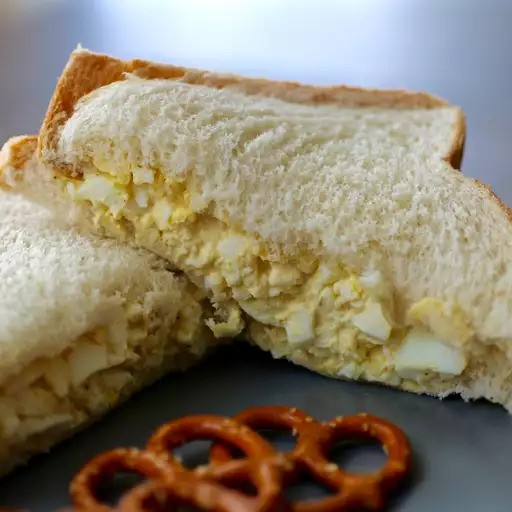

Egg Salad

Description
This delicious Egg Salad Sandwich recipe is a hit for picnics, packed lunches, and quick yet satisfying meals. You can easily scale this recipe to fit any number of hungry eaters! As written, this recipe will make approximately 4 egg salad sandwiches.
Ingredients
- 4 hard boiled eggs
- 1/4 cup mayonnaise
- 2 pickle spears
- 1/2 teaspoon yellow mustard
- paprika, salt, and pepper to taste
Steps
- Chop hard boiled eggs and pickles into small pieces
- Place chopped eggs in a medium-sized mixing bowl
- Stir in mayonnaise, pickles, and mustard
- Season with paprika, salt, and pepper, as desired
- Stir until color is uniform and consistency is palatable
- Serve on your favorite bread or crackers
- Enjoy!
This recipe was found on allrecipes.com